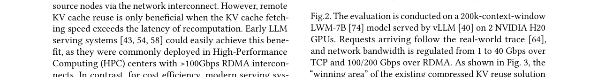

Efficient Remote KV Cache Reuse with GPU-native Video Codec
总结
随着大语言模型（LLM）上下文窗口扩展至百万级token，远程KV缓存复用（remote KV cache reuse）成为加速推理的关键技术——通过从远程存储获取已计算的KV缓存，避免重复预填充计算。然而在带宽受限场景下，传输延迟成为瓶颈，现有压缩方案虽能节省带宽，但解压缩开销严重抵消了复用收益。
As-is: 当前主流方案分为三类：(1) 原始KV复用（如Mooncake、AIBrix）直接传输未压缩KV张量，在高速RDMA网络下表现良好，但在数十Gbps的常规带宽下传输延迟过大；(2) CacheGen使用自定义CUDA核进行算术编码压缩与解压，但解压过程与LLM推理争抢GPU计算资源（SM）和显存（峰值内存达原始KV缓存的2.7倍），导致预填充时间增加50%、解码时间增加20%；(3) ShadowServe将解压卸载到SmartNIC上以避免干扰，但每块NVIDIA BlueField NIC成本超过3000美元，难以大规模部署。此外，并发工作llm.265尝试用视频编码压缩KV缓存，但压缩增益有限且缺乏与推理引擎的系统协同设计。
To-be: KVCodec利用现代GPU上完全空闲的专用视频编解码硬件（NVENC/NVDEC），实现了零额外硬件成本、零推理干扰的KV缓存编解码。其核心创新包括：(1) codec-friendly tensor layout，通过跳过视频编码中的有损DCT和量化步骤，充分利用帧内/帧间无损冗余消除，实现约11.9×的压缩比（相比llm.265的58%、CacheGen的42%）；(2) efficient KV fetcher，包含fetching-aware scheduler（隔离复用与非复用请求，避免HOL阻塞）、adaptive-resolution KV fetching（根据动态带宽自适应调整视频分辨率以消除流水线气泡，节省21%时间）和frame-wise tensor restoration（将解压缓冲区从chunk级的1.5-2GB降至帧级的50MB，总缓冲<70MB）。在三种GPU（A100/H20/L20）和三种模型（7B/34B/70B）上，KVCodec相比SOTA方法实现了最高3.51×的TTFT降低，同时保持无损精度。
背景
LLM的推理过程分为两个阶段：预填充（prefilling）阶段同时处理全部输入token生成第一个输出token，解码（decoding）阶段以自回归方式逐token生成。KV缓存通过存储每层注意力的中间张量来消除自回归生成的冗余计算，但对预填充阶段无加速作用。
KV缓存复用通过"存储换计算"的策略显著降低预填充延迟。其核心原理是：当一个请求生成的KV缓存被后续共享相同前缀的请求复用时，可跳过该前缀的重复计算。这种模式在现代LLM应用中极为普遍——聊天机器人每轮对话都需输入历史记录，多智能体代码调试器频繁重读代码，视觉-语言-动作（VLA）模型持续回忆先前的观测和动作等。Mooncake报告KiMi真实工作负载中50%的KV缓存会被复用，LMCache认为这一比例更高。
然而，KV缓存的存储成本巨大。存储一个34B模型的80K-token KV缓存（如亚马逊年报）需消耗高达19GB存储空间，本地托管所有可复用KV缓存不切实际。因此，远程KV缓存复用应运而生：Mooncake将GPU集群内的GPU显存、主机内存和磁盘抽象为 disaggregated KV缓存池，LMCache利用专用存储服务器。在这些分布式设置中，KV缓存必须通过网络传输。
早期LLM服务系统部署在HPC中心，配备>100Gbps RDMA互连，传输延迟可忽略。但出于经济性考虑，现代服务系统趋向部署在中低端GPU上，带宽通常仅数十Gbps甚至更低（如AWS专用存储服务器带宽仅19Gbps）。在这种带宽受限场景下，远程KV复用的性能优势大幅缩水。

如图2所示，当前存在三种预填充方式：Full Prefill（无KV复用的完整预填充）、Raw KV Reuse（传输原始KV缓存）和Compressed KV Reuse（传输压缩KV缓存）。其时间成本分别为：prefill、transmission+prefill、transmission+decompression+prefill。论文在2块NVIDIA H20 GPU上使用vLLM服务200K上下文窗口的LWM-7B模型，带宽从1Gbps到40Gbps（TCP）及100/200Gbps（RDMA）进行测试，发现现有压缩KV复用方案的"获胜区域"（即优于其他两种方案的场景）出人意料地小。
问题
论文针对的核心问题可归纳为两个层面：
问题一：现有压缩方案的压缩比与精度难以兼顾。 CacheGen和ShadowServe将KV张量视为通用字节流，使用算术编码（arithmetic coding）压缩，完全忽略了K和V数据的独特分布，导致压缩比低，节省的传输时间无法摊销解压延迟。而并发工作llm.265虽尝试视频编码，但存在两个致命缺陷：(1) 使用默认的有损编码（含DCT和量化），导致精度下降——因为DCT和量化平滑掉的高频信息实际上对应LLM中的激活异常值（activation outliers），这些是关键的注意力汇聚点或显著特征；(2) 当使用无损配置时，由于KV张量到视频帧的朴素映射破坏了固有的时空冗余，压缩比退化至与CacheGen相当的水平。llm.265由此错误地得出"KV张量缺乏时间相似性"的结论，并丢弃了帧间预测步骤。
问题二：远程KV获取的端到端效率低下。 具体表现为三个子问题：
1. 调度干扰（HOL Blocking）：现有系统（LMCache、Mooncake）的调度器无差别地将需要KV获取的请求与普通请求批处理在一起。如图9所示，请求R1（需远程KV复用）与R2（无复用）被批量处理，R2被R1的获取过程阻塞，导致非复用请求的TTFT增加。
2. 流水线停顿与硬件利用率低：LMCache采用推理阻塞式获取策略，在收到全部KV缓存前GPU计算资源闲置。Mooncake虽采用逐层获取-推理流水线，但缺乏处理网络抖动的机制（带宽下降时T_l2延长导致流水线气泡），且NVDEC利用率不足20%。
3. KV恢复的内存争用：LMCache和Mooncake以chunk粒度（每chunk 1.5K-2K token）恢复原始KV张量，造成突发内存峰值（每chunk约2GB），与推理内存访问竞争，恶化TTFT。CacheGen更严重——预分配5.5GB GPU内存（2.7×原始KV缓存大小）仅用于解压4K token。
此外，CacheGen的CUDA解压核与LLM推理并发执行时，引发频繁的核上下文切换，导致SM利用率不足和内存I/O争用（图5），预填充时间增加50%，解码时间增加20%。ShadowServe虽通过SmartNIC避免了GPU争用，但每块NVIDIA BlueField NIC成本超过3000美元，且存在硬件依赖，难以广泛部署。
解决方案
KVCodec的系统架构（图10）集成了三个模块到原有KV缓存管理器中：fetching-aware scheduler、KV decompression引擎和KV compression模块。KV压缩和减压在后台执行，对推理引擎透明。
1. Codec-friendly KV Compression
KVCodec的压缩策略核心是：跳过视频编码中的有损步骤（DCT和量化），充分利用无损的帧内/帧间冗余消除能力。为此需要找到从KV张量形状`[token, layer, headnum, headdim]`到视频格式`[frame, height, width, 3]`的最优映射。
1.1 Inter-frame layout（帧间布局）
通过深入分析KV缓存特性和视频编码特性，得出三个关键观察：
(i) 沿token维度切片产生最高图像相似度。 使用SSIM和PSNR评估沿不同维度切片的连续帧相似度（图11），token维度得分最高（SSIM约0.87），远超layer（0.23）、headnum（0.64）和headdim（0.56）。这源于LLM的因果自注意力机制将前序token信息注入后续token，加之相邻token的相似位置编码使它们更加接近。
(ii) 将张量分散到多帧比拼接在单帧上获得更高压缩增益。 如图12(上)所示，4个连续张量作为4个连续帧编码比拼接为单帧获得1.6×压缩增益。原因是视频编码的差分压缩特性：单帧拼接时每个像素块只能参考相邻左边和上边边界像素，而多帧排列时像素块可参考前驱帧的所有像素。
(iii) 压缩比对视频分辨率敏感。 NVDEC最小可行分辨率为144P，更高分辨率虽增大视频体积但提升解码效率，需权衡。
基于这些观察，inter-frame layout遵循两个原则：(1) 沿token维度切片并将token相邻的张量放置在连续帧上；(2) 编码多分辨率版本，运行时自适应选择最优分辨率。
具体实现分三步（图13）：(1) 将KV缓存分为三层chunk并沿token维度切片，每chunk含T个形状为`[1, 3, channel]`的张量；(2) 将T个张量顺序分为T/F组，每组F个张量；(3) 每组中相邻张量放置在连续K帧的相同位置，通过intra-frame layout确定最佳张量布局。三层（相似度最低的维度）映射到独立编码的YUV/RGB颜色通道。
1.2 Intra-frame layout（帧内布局）
确定headnum(H)和headdim(D)维度的最优映射。保持原始布局`[1, 3, headnum×headdim]`仅获得8.7×压缩比，远低于最终的11.9×。
这是一个联合优化问题（几何平铺+元素排列），解空间为O(log N × N!)，N=H×D，暴力搜索不可行。论文基于LLM架构特性提出三条缩减规则：
- Rule (i)：不交换不同注意力头之间的元素。交换50%元素跨32个头导致压缩比退化2.4×。由此将搜索空间从O(log N × N!)缩减为O((log H × H!) × (log D × D!))。
- Rule (ii)：保持注意力头内部元素顺序。打乱头内元素使帧内预测帧大小增加17%。搜索空间进一步缩减为O((log H × H!) × log D)。
- Rule (iii)：注意力头顺序保持初始排列。随机头序仅产生<0.3%的大小变化。最终搜索空间缩减为O(log H × log D)。
对于LWM-7B，仅需评估log32 × log128 = 35种可能性。离线搜索1.5小时即获得三个模型的最优布局：LWM-7B为(8, 512)、Yi-34B为(8, 128)、Llama-70B为(16, 64)。以LWM-7B为例，headnum和headdim被reshape为(8, 4)和(1, 128)，再进一步reshape为(8, 512)，最后三层(8, 512)矩阵batched为(8, 512, 3)张量。
2. Efficient Remote KV Fetching
2.1 Fetching-aware scheduler
引入专用队列`waiting_for_KV`管理获取请求（图15）。每次迭代中，调度器区分获取请求（如请求A），将其从waiting队列移至`waiting_for_KV`队列，并通知fetch controller在后台开始获取KV缓存。非复用请求（如B和C）仍按原始逻辑进入running队列立即推理。获取完成后，fetch controller通知调度器将请求A从`waiting_for_KV`队列移至running队列在下一迭代执行。此设计确保推理引擎不受KV获取影响，维持原有调度策略。
2.2 Adaptive-resolution KV fetching
传输与解码效率呈现相反特性：低分辨率视频（如240P）传输快但无法饱和NVDEC的64×64像素块并行解码单元，解码延迟比1080P高1.3×；高分辨率解码快但传输慢。此外，整个KV获取可能耗时数十秒，网络条件易波动。
KVCodec提出带宽感知的分辨率自适应机制。利用现代GPU丰富的NVDEC资源（如A100有5个NVDEC，H20有7个），将其抽象为解码池，每个实例绑定一个NVDEC实现并行解码。分辨率适配器采用基于profile的查表方法：获取视频chunk时，根据上一chunk的传输延迟预测网络带宽，遍历所有分辨率的传输延迟，查表估计解码延迟，选择产生最小流水线气泡的最优分辨率。
如图17示例：获取第2个chunk前带宽从6Gbps降至3Gbps，适配器选择240P（传输466ms+解码460ms=926ms，气泡6ms）而非固定1080P（传输670ms+解码350ms=1020ms）。4个chunk后带宽升至4Gbps，切换至480P。相比固定1080P方案，自适应方法节省21%时间。
2.3 Frame-wise KV tensor restoration
针对解码阶段参考帧占用GPU全局内存与推理引擎竞争的问题，提出两项策略：
(1) 通过精心的张量布局设计，将参考帧数量限制在4帧以内，即使在2K分辨率下内存开销也低于20MB。
(2) 与CacheGen和ShadowServe的chunk级恢复（每chunk 1.5K token）不同，KVCodec采用帧级恢复。一旦原始视频帧解码完成，立即通过回调函数`On_frame_probe`映射回原始KV张量并填入paged memory的预分配槽位。解压缓冲区从chunk级的1.5-2GB降至帧级的50MB，结合参考帧的20MB，总解压缓冲<70MB。虽然`On_frame_probe`在CUDA核上执行，但仅包含少量reshape操作，极其轻量。帧到张量的映射在KV压缩时已编码到bitstream中。
实现细节
KVCodec作为LMCache(v0.3.7)的可插拔后端实现，使用vLLM(v0.10.2)作为推理引擎。代码库主要使用Python(v3.12)，高效KV fetcher部分用C++和CUDA实现，总计约5K行代码。
- KV压缩：通过FFmpeg API接口调用NVENC实现，无NVENC时回退到CPU编码。采用H.265编码，`lossless=1`跳过有损步骤。KV缓存被量化为整数，编码为多分辨率视频chunk（每个含10K token跨三层）。
- KV获取：fetching-aware scheduler在独立线程上运行，通过线程事件与vLLM scheduler同步。所有NVDEC抽象为资源池，每个实例绑定一个NVDEC，通过GStreamer的nvv4l2decoder构建解码流水线。解码流水线用C++实现，通过Pybind11调用并使用`py::gil_scoped_release`绕过Python GIL。`On_frame_probe`回调插入其中，配合自定义的`Sparse_frame_KV_transfer`算子快速写入paged memory。
- 兼容性：KVCodec保持与vLLM原生特性的完全兼容，遵循Mooncake的逐层获取-推理流水线，利用vLLM的chunked prefill精确估计推理时间以消除流水线气泡。
测试结果
实验设置
- 模型：LWM-7B（1M上下文）、Yi-34B（200K上下文）、Llama3-70B（128K上下文）
- 数据集：L-Eval（20个闭卷QA任务，508篇3-200K token长文档）、LV-Eval（单跳/多跳QA，16-256K token）、LongBench-V2（多选格式，13-167K上下文，涵盖单/多文档QA、长对话、代码、结构化数据）
- 指标：精度（各数据集标准指标）、延迟（TTFT等）、压缩比
- 基线：Full prefill、Raw KV reuse、CacheGen、ShadowServe、llm.265
- 硬件：高端NVIDIA A100（80GB，5个NVDEC）、中端H20（96GB，7个NVDEC）、低端L20（48GB，3个NVDEC）；LWM/Yi/Llama3分别使用2/2/4卡（A100和H20）或2/4/8卡（L20）
- 默认配置：H20 + Yi-34B + 16Gbps带宽网络（常规云平台典型配置）
主要结果
TTFT降低：如图18所示，KVCodec在各种硬件和模型上均实现最低TTFT。平均而言，相比Full prefill、Raw KV reuse和CacheGen分别降低13.63×、3.51×和1.52×。Full prefill因超线性计算复杂度在长上下文场景下TTFT不可接受；Raw KV reuse和CacheGen虽通过远程KV复用缓解计算负担，但TTFT仍显著高于KVCodec。
非复用请求的性能提升：KVCodec将非复用请求的TTFT降低77%，TPOT降低35.4%，这归功于fetching-aware scheduler将KV获取隔离在后台，避免了HOL阻塞。
精度保持：KVCodec在所有三个基准测试上保持无损精度，与Full prefill一致。这得益于跳过有损DCT和量化步骤，仅利用无损冗余消除。
压缩比：KVCodec实现约11.9×压缩比，显著优于CacheGen和ShadowServe（约5×）以及llm.265（约6.9×，为KVCodec的58%）。CacheGen沿token维度切片的方案仅达到KVCodec的42%压缩比。
资源隔离：通过frame-wise tensor restoration，解压缓冲区从chunk级的1.5-2GB降至<70MB（50MB解压缓冲+20MB参考帧）。NVDEC利用率从Mooncake的<20%大幅提升。自适应分辨率机制在动态带宽下节省21%时间。
局限性
论文未深入讨论以下方面的局限性：(1) KV压缩为离线进行，需要预先编码和存储多分辨率版本，增加了存储开销；(2) 依赖GPU原生视频编解码硬件（NVENC/NVDEC），虽然现代NVIDIA GPU普遍配备，但AMD和Intel GPU的兼容性仅在概念层面提及（AMF、QSV），未实际验证；(3) 分辨率自适应的带宽预测基于上一chunk的传输延迟，在剧烈带宽波动场景下可能不够及时；(4) 评估中未与ShadowServe进行直接端到端对比（因硬件成本限制），部分对比基于文献数据。